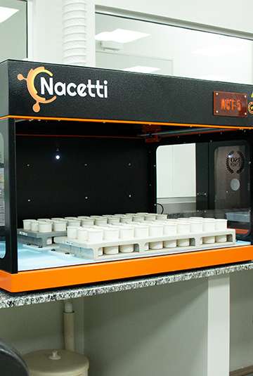
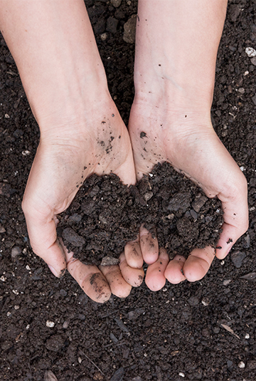

Análise de Solo


A análise de solo tem como objetivo quantificar os nutrientes disponíveis a partir da amostra de solo coletada, a fim de se conhecer o estado nutricional e o grau de fertilidade em que se encontra uma determinada área agrícola


Conhecer os nutrientes disponíveis no solo torna-se fator determinante para que não seja aplicado em demasia ou em pouca quantidade garantindo ao produtor maior rentabilidade e produtividade.